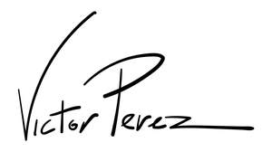

Trade Mark Journal No.2025/009 28 February 2025
UK00004162296 19 February 2025 (41,42)

- Class 41
- Production of animation; Film studios; Production of films in studios; Special effects animation services for film and video; Animation production services; Studios (Movie -); Movie studios; Cinematographic film studio services; Cinema studios; Rental of film studios; Film studio services; Post-production editing services in the field of music, videos and film; Production of video films; Hire of film projectors; Film editing (Cinematographic -); Rental of lighting apparatus for movie sets or film studios; Video film production; Production of cinematographic films; Production of cinema films; Film editing; Cinema studio services; Video and DVD film production; Movie studio services; Film production, other than advertising films; Production of special effects for films; Special effects (Production of -) for films; Film production; Production of training films; Cinematographic film showings; Production of movie special effects; Operating of film studios; Production of films; Production of pre-recorded cinema films; Production of motion picture films; Production of films, other than advertising films; Consultancy on film and music production; Motion picture film production; Film production services; Motion picture studios; Film hire; Rental of movie props; Film and video tape film production; Rental of film projectors; Recording studio services for films; Film editing (Photographic -); Services in the production of animated motion picture entertainment; Production of animated motion pictures; Rental of cinematographic and motion picture films; Audio and video production, and photography; Production of television and cinema films; Production of animated cartoons; Production of pre-recorded video films; Film directing, other than advertising films; Recording, film, video and television studio services; Exhibition of cine films; Rental of cinema films; Rental of cinematographic films; Audio, video and multimedia production, and photography; Rental of video films; Production of documentaries; Hire of recording studios; Hire of films; Production of film studies; Video tape film production; Motion picture studio services; DVD and CD-ROM film production; Video production; Directing of theater productions; Production of animated cine-film clips; Rental of lighting for use on film sets; Theater productions; Film showings; Theatre productions; Rental of movie projectors; Dance studios; Production of television films; Rental of motion picture films; Rental of scenery for television studios; Scenery for television studios (Rental of -); Providing audio or video studios; Rental of lighting apparatus for theatrical sets or television studios; Recording studios; Rental of cinema projectors; Dubbing for movies; Training services for cinema technicians; Film rental; Rental of lighting apparatus for television studios.
- Class 42
- Design of artwork; Graphic art design; Design services relating to artwork; Art work design; Design services for art-work; Graphic art services; Design of sculptures; Industrial and graphic art design; Commercial art design; Graphic illustration design; Graphic design of promotional materials; Industrial art design; Graphic illustration design services; Graphic arts design; Design (Graphic arts -); Design of logos for t-shirts; Design of audio-visual creative works; Graphic design; Design of post card cartoon characters; Design of printed material; Authenticating works of art; Works of art (Authenticating -); Packaging designs; Animation and special-effects design for others; Animation design for others.
Victor Raul Perez Raya